Generated from a Jupyter notebook
This page is TLM/tlm_analysis.ipynb, rendered with its stored outputs.
Run it in Google Colab or
view the notebook on GitHub.
Contact Resistance and the Transfer Length Method (TLM)¶
Every measurement of a semiconductor layer is made through a contact. The number a probe station reports is therefore always a sum: the resistance of the layer you wanted to measure, plus the resistance of getting current into and out of it. Those two are not separable from a single measurement.
The Transfer Length Method separates them, using nothing more than a set of identical contacts placed at different distances apart. From one straight line it returns four quantities:
| Symbol | Quantity | Units |
|---|---|---|
| \(R_S\) | sheet resistance of the layer | \(\Omega/\square\) |
| \(R_C\) | resistance of one contact | \(\Omega\) |
| \(L_T\) | transfer length | mm |
| \(\rho_C\) | specific contact resistivity | \(\Omega\,\text{cm}^2\) |
This notebook builds the method up in order:
| Section | Question answered |
|---|---|
| 1 | What does a two-probe measurement actually contain? |
| 2 | What does the layer alone contribute? |
| 3 | Why does the contact term not vanish as the spacing shrinks? |
| 4 | Where does current actually cross the interface? |
| 5 | What is the transfer length, and what sets it? |
| 6 | How do those pieces combine into the TLM equation? |
| 7-8 | How is the measurement made, and reduced to one number per spacing? |
| 9 | How are \(R_S\), \(R_C\), \(L_T\) and \(\rho_C\) extracted, with uncertainties? |
| 10 | Which errors matter, and how much? |
| 11 | When does the method break down, and how would you know? |
| 12 | How do I run this on my own measurements? |
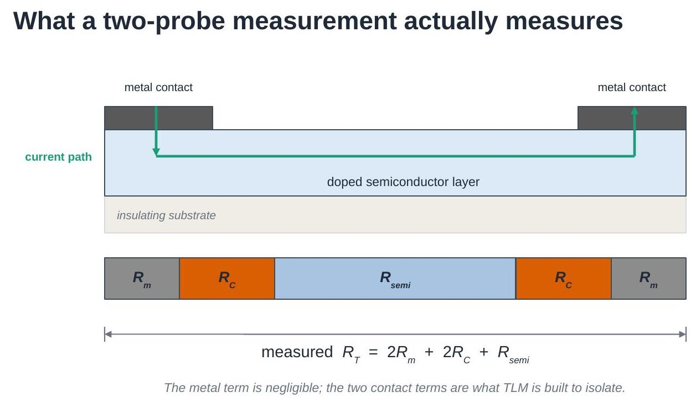
Equations are numbered (1), (2), ... and referred to by those numbers
throughout. All physics and fitting functions live in
tlm_helper.py, so the notebook itself stays short;
that module's docstrings point back to these equation numbers.
1. What a two-probe measurement contains¶
Put two metal contacts on a conducting layer, force a current through one and out of the other, and measure the voltage. The resistance you get is a series chain:
- \(R_m\) — resistance of the metal itself and of the leads,
- \(R_C\) — resistance of one metal/semiconductor interface,
- \(R_{\text{semi}}\) — resistance of the semiconductor between the contacts.
The metal term is small (metals are orders of magnitude more conductive than a doped semiconductor layer) and, with four-wire probing, the leads are excluded from the measurement altogether. So Eq. (1) is used as
Two unknowns, one measurement. Nothing in a single reading tells you how the total splits between them — which is exactly the problem TLM solves.
2. What the layer alone contributes¶
The semiconductor term is set by the sheet resistance of the layer,
where \(\rho\) is the bulk resistivity (\(\Omega\,\text{cm}\)) and \(t\) the layer thickness. \(R_S\) has units of \(\Omega/\square\) — ohms per square — because any square patch of the layer has the same edge-to-edge resistance whatever its size. A rectangle of length \(L\) and width \(W\) is just \(L/W\) squares in series:
Sheet resistance is the natural way to describe a thin layer: it separates what the material is (\(\rho\)) and how thick it is (\(t\)) from how it has been patterned (\(L/W\)).
The cell below shows what each of the three inputs does to a measured I-V curve of a contact-free strip. Note which ones change the slope and by how much.
import numpy as np
import matplotlib.pyplot as plt
import tlm_helper as th
plt.rcParams.update({'font.size': 11})
V = np.linspace(-0.2, 0.2, 201)
rho0, t0, L0, W0 = 1e-3, 100e-7, 1.0, 5.0 # ohm.cm, cm, mm, mm
fig, axes = plt.subplots(1, 3, figsize=(12, 3.4), sharey=True)
for rho in [5e-4, 1e-3, 2e-3]: # Eq. (2)
Rs = th.sheet_resistance(rho, t0)
axes[0].plot(V, th.iv_curve(V, Rs, L0, W0), label=f'{rho*1e3:.1f} mΩ cm')
axes[0].set_title('bulk resistivity $\\rho$')
for t in [50e-7, 100e-7, 500e-7]: # Eq. (2)
Rs = th.sheet_resistance(rho0, t)
axes[1].plot(V, th.iv_curve(V, Rs, L0, W0), label=f'{t*1e7:.0f} nm')
axes[1].set_title('layer thickness $t$')
Rs0 = th.sheet_resistance(rho0, t0)
for L in [0.5, 1.0, 3.0]: # Eq. (3)
axes[2].plot(V, th.iv_curve(V, Rs0, L, W0), label=f'{L:.1f} mm')
axes[2].set_title('contact spacing $L$')
for ax in axes:
ax.set_xlabel('Voltage (V)'); ax.legend(fontsize=9)
axes[0].set_ylabel('Current (A)')
plt.tight_layout(); plt.show()
print(f"baseline sheet resistance R_S = {Rs0:.0f} ohm/sq")
print(f"strip resistance at L = 1 mm, W = 5 mm: "
f"{th.strip_resistance(Rs0, 1.0, 5.0):.1f} ohm")
baseline sheet resistance R_S = 100 ohm/sq
strip resistance at L = 1 mm, W = 5 mm: 20.0 ohm
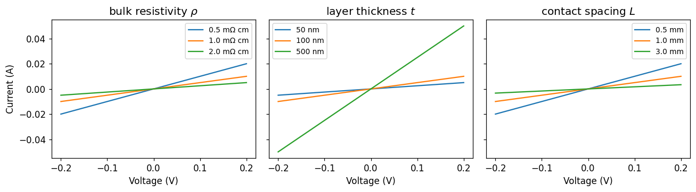
Three different knobs, one visible effect: the slope. A single I-V curve cannot tell you which of them changed — and, once contacts are added, it cannot tell you whether the layer or the interface is responsible either.
3. Why the contact term does not vanish¶
Combining Eqs. (1) and (3) gives the relation TLM is built on:
Measure \(R_T\) at several contact spacings \(L\) and this is a straight line:
- the slope is \(R_S/W\) — the layer,
- the intercept at \(L = 0\) is \(2R_C\) — the contacts.
The contact term is the part that survives extrapolating the spacing to zero. That is the whole trick: the two contributions have different dependences on \(L\), so varying \(L\) separates them.
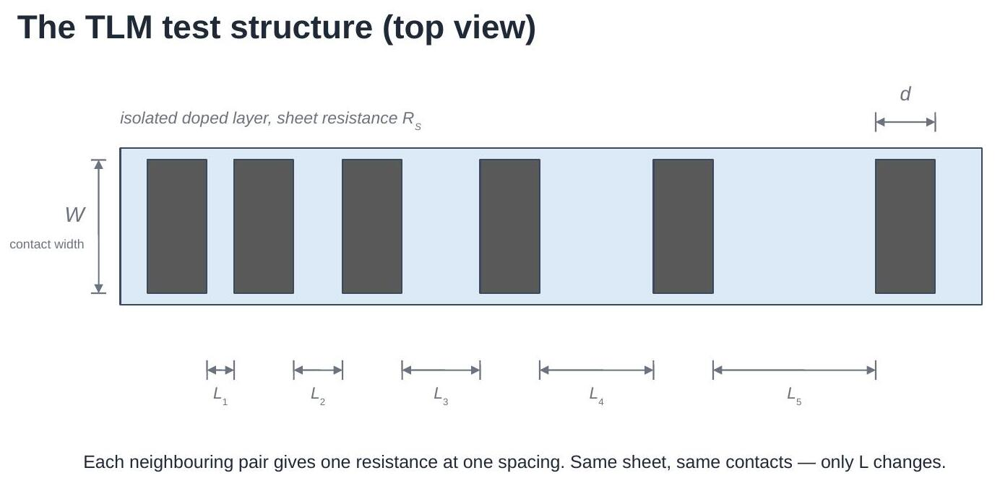
A TLM test structure is built to do exactly this: one isolated strip of the layer under test, a row of identical contacts on top of it, and a set of different gaps between neighbouring contacts. Every neighbouring pair gives one point on the line.
4. Where the current actually crosses¶
\(R_C\) on its own is not a useful figure of merit: make the contact bigger and \(R_C\) falls, so quoting it says as much about the mask as about the process. The transferable quantity is the specific contact resistivity
in \(\Omega\,\text{cm}^2\) — the resistance of a unit area of interface. Lower is better.
That leaves the question of what \(A_{\text{eff}}\) is. In an idealised bar with contacts on the end faces it is obvious. In a real planar structure the contact sits on top of the layer, and current does not enter it uniformly: it takes the least-resistive route, which means crossing into the metal as soon as it can. Current crowds at the leading edge of the contact and dies away underneath it.
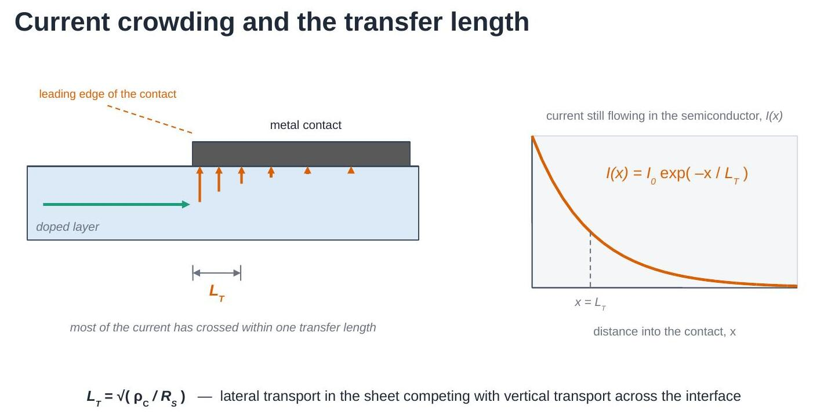
Solving the distributed network of sheet resistance and interface resistance under the contact gives an exponential decay,
with \(x\) measured from the leading edge. So the drawn contact length is not what matters — the decay length is.
5. The transfer length¶
The decay length in Eq. (6) is the transfer length
Read it as a competition between two paths: travelling further sideways in the sheet (cost set by \(R_S\)) versus crossing the interface here and now (cost set by \(\rho_C\)). A good contact — small \(\rho_C\) — pulls current in almost immediately and has a short \(L_T\); a poor contact lets current run far under the metal before crossing.
\(L_T\) answers the area question. The effective area is the contact width times one transfer length,
so one contact has resistance
There is a practical consequence in Eq. (8): extending a contact beyond a few \(L_T\) adds area but no current path. The cell below shows both the decay and where the resistance stops improving.
Rs = 250.0 # ohm/sq, a typical doped emitter
W = 10.0 # mm, contact width
fig, (axL, axR) = plt.subplots(1, 2, figsize=(11, 3.6))
# --- left: current decay under the contact, for three contact qualities
x_um = np.linspace(0, 250, 300)
for rho_c in [1e-4, 1e-3, 1e-2]:
LT = th.transfer_length_mm(rho_c, Rs) # Eq. (7)
axL.plot(x_um, th.current_under_contact(x_um * 1e-3, LT), # Eq. (6)
label=f'$\\rho_C$ = {rho_c:.0e} Ω cm², $L_T$ = {LT*1e3:.0f} µm')
axL.set_xlabel('distance into the contact, $x$ (µm)')
axL.set_ylabel('$I(x)/I_0$')
axL.legend(fontsize=8.5); axL.set_title('current crowding')
# --- right: why long contacts stop helping
d_um = np.linspace(5, 350, 300)
for rho_c in [1e-4, 1e-3, 1e-2]:
LT = th.transfer_length_mm(rho_c, Rs)
Rc_d = th.contact_resistance(Rs, LT, W, d_mm=d_um * 1e-3) # Eq. (9), full form
axR.plot(d_um, Rc_d / th.contact_resistance(Rs, LT, W),
label=f'$L_T$ = {LT*1e3:.0f} µm')
axR.axhline(1.05, ls=':', color='k', lw=1)
axR.set_xlabel('drawn contact length, $d$ (µm)')
axR.set_ylabel('$R_C(d)\\ /\\ R_C(d \\gg L_T)$')
axR.set_ylim(0.9, 3); axR.legend(fontsize=8.5)
axR.set_title('contact length beyond ~3 $L_T$ buys nothing')
plt.tight_layout(); plt.show()
for rho_c in [1e-4, 1e-3, 1e-2]:
LT = th.transfer_length_mm(rho_c, Rs)
print(f"rho_C = {rho_c:.0e} ohm.cm^2 -> L_T = {LT*1e3:6.1f} um, "
f"R_C = {th.contact_resistance(Rs, LT, W):.3f} ohm")
rho_C = 1e-04 ohm.cm^2 -> L_T = 6.3 um, R_C = 0.158 ohm
rho_C = 1e-03 ohm.cm^2 -> L_T = 20.0 um, R_C = 0.500 ohm
rho_C = 1e-02 ohm.cm^2 -> L_T = 63.2 um, R_C = 1.581 ohm
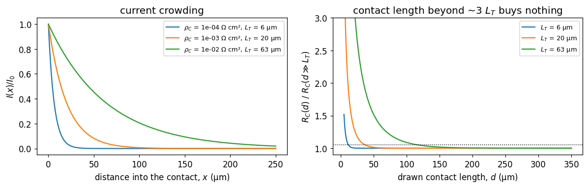
6. The TLM equation¶
Substituting Eq. (9) into Eq. (4) collapses everything into one line:
Plot \(R_T\) against \(L\) and read off:
| Feature of the line | Gives |
|---|---|
| slope | \(R_S / W\) |
| \(y\)-intercept | \(2R_C\) |
| \(x\)-intercept | \(-2L_T\) |
| combined | \(\rho_C = R_S L_T^2\) |
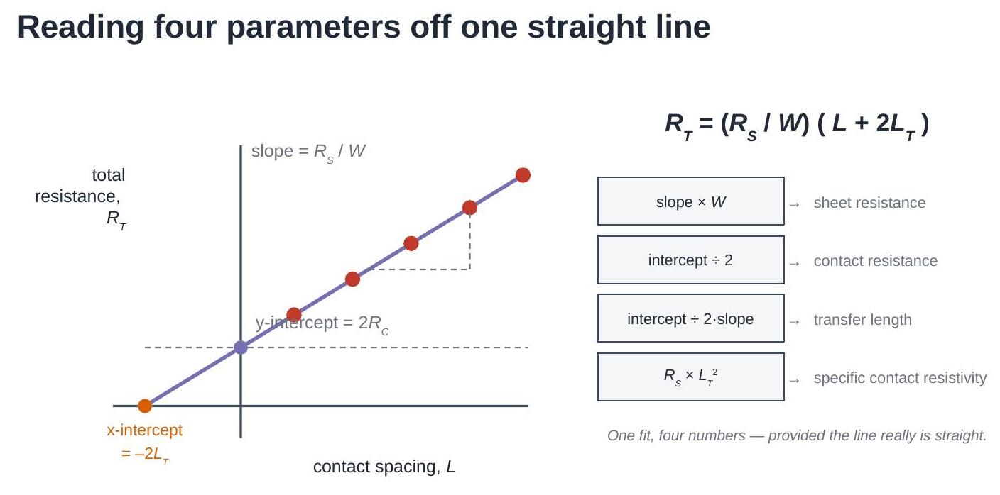
Note what the \(x\)-intercept means physically. The line does not hit zero resistance at zero spacing — it hits zero at a negative spacing, as if the current had to travel an extra \(L_T\) under each contact. That is precisely what it does.
7. Making the measurement¶
Each point on that line comes from a voltage sweep across one pair of contacts.
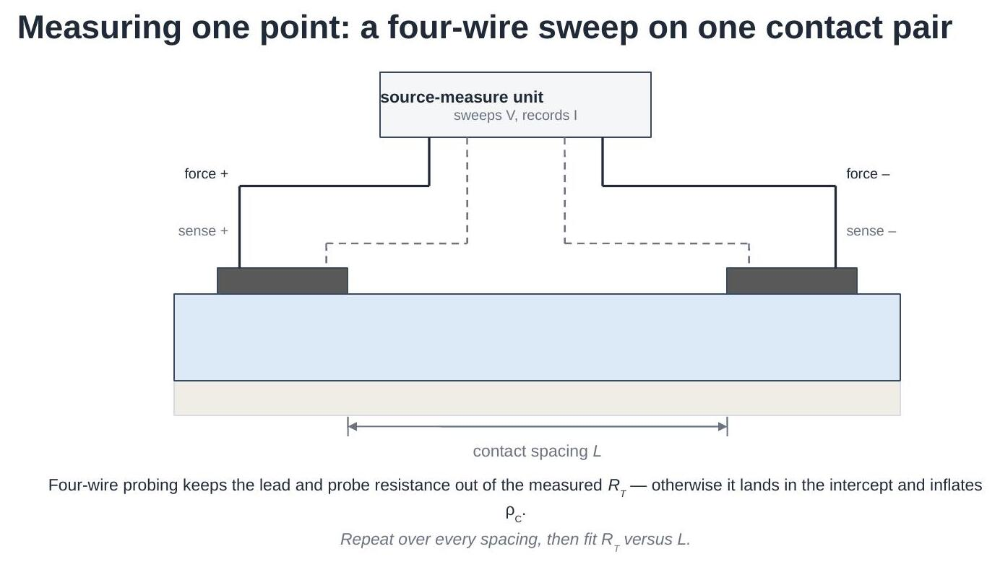
Two details decide whether the extraction will be any good:
- Four-wire probing. The force leads carry the current; separate sense leads measure the voltage where no current flows through them, so probe and lead resistance drop out. In two-wire mode that resistance is the same at every spacing — it adds straight into the intercept and is indistinguishable from contact resistance.
- A sweep, not a single point. Fitting the slope of \(I(V)\) rejects any current offset, and the shape of the curve is the evidence that the contact is ohmic at all.
The cell below generates a synthetic dataset from the model above — known \(R_S\) and \(\rho_C\), so the extraction can be checked against the truth — with realistic current noise and a small random error on the actual contact spacings.
spacings_mm = np.array([0.2, 0.4, 0.8, 1.6, 3.2])
data = th.synthetic_tlm_dataset(
spacings_mm,
Rs_ohm_sq=250.0, # the layer we are pretending to measure
rho_c_ohm_cm2=1.5e-3, # the contact we are pretending to have
W_mm=10.0,
n_repeats=4, # four nominally identical structures each
noise_pA=400.0, # source-meter current noise
spacing_error_um=8.0, # lithography / probe placement error
seed=7,
)
print("ground truth used to generate the data:")
for k, v in data['truth'].items():
print(f" {k:16s} {v:.4g}")
plt.figure(figsize=(5.6, 3.8))
for i, L in enumerate(data['spacings_mm']):
plt.plot(data['V'], data['I'][i, 0] * 1e3, label=f'L = {L:.1f} mm')
plt.xlabel('Voltage (V)'); plt.ylabel('Current (mA)')
plt.legend(fontsize=9); plt.title('one sweep per spacing')
plt.tight_layout(); plt.show()
ground truth used to generate the data:
Rs_ohm_sq 250
rho_c_ohm_cm2 0.0015
LT_mm 0.02449
Rc_ohm 0.6124
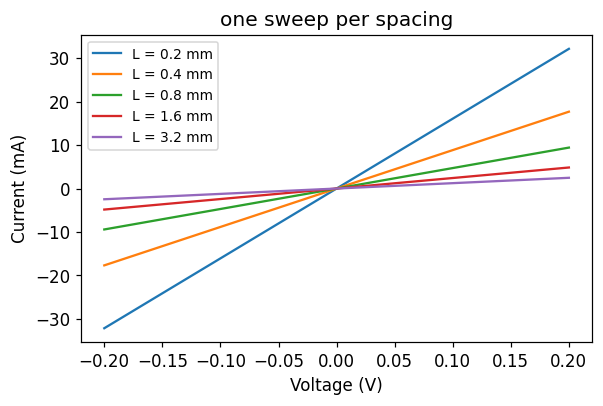
8. From sweeps to one resistance per spacing¶
Each sweep is reduced by fitting
and taking \(R_T\) from the slope. Repeated structures at the same spacing are then averaged, and their spread becomes the error bar on that point — which will be used to weight the TLM fit later.
Before averaging anything, check that each curve is actually a straight line. The \(R^2\) of the fit is a cheap, quantitative version of "the I-V looked fine".
L, R_mean, R_std, R_all = th.resistances_per_spacing(data) # Eq. (11)
print(f"{'L (mm)':>8} {'R_T (Ω)':>10} {'spread (Ω)':>11} {'min R²':>8}")
for i, Li in enumerate(L):
r2 = min(th.iv_linearity(data['V'], data['I'][i, j])
for j in range(data['I'].shape[1]))
print(f"{Li:8.2f} {R_mean[i]:10.3f} {R_std[i]:11.4f} {r2:8.5f}")
plt.figure(figsize=(5.6, 3.8))
plt.errorbar(L, R_mean, yerr=R_std, fmt='o', capsize=4, color='C3')
plt.xlabel('contact spacing, $L$ (mm)')
plt.ylabel('total resistance, $R_T$ (Ω)')
plt.title('the TLM plot, before fitting')
plt.grid(alpha=0.3); plt.tight_layout(); plt.show()
L (mm) R_T (Ω) spread (Ω) min R²
0.20 6.352 0.1708 1.00000
0.40 11.248 0.1152 1.00000
0.80 21.255 0.1058 1.00000
1.60 41.244 0.1201 1.00000
3.20 81.223 0.1572 1.00000
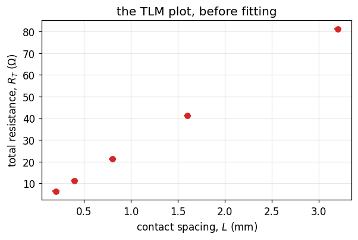
9. The extraction¶
Fit \(R_T = mL + b\) and unpack it — Eq. (10) term by term:
Two things are worth doing properly here, and tlm_helper.fit_tlm does
both:
- Weight the fit by the measured spread at each spacing, so a noisy point does not drag the intercept.
- Propagate the fit covariance, not just the individual standard errors. The slope and intercept of a line fitted over a limited range are strongly anti-correlated, and \(L_T\) depends on their ratio; ignoring the correlation overstates its uncertainty.
\(W\) enters Eqs. (12) and (15) directly, so measure the contact width rather than trusting the mask drawing.
res = th.fit_tlm(L, R_mean, W_mm=data['W_mm'], sigma_ohm=R_std)
print(res.summary())
truth = data['truth']
print("\nrecovered / true:")
print(f" R_S {res.Rs_ohm_sq / truth['Rs_ohm_sq']:.3f}")
print(f" rho_C {res.rho_c_ohm_cm2 / truth['rho_c_ohm_cm2']:.3f}")
# the plot, with the two intercepts marked
x = np.linspace(-2.5 * res.LT_mm, L.max() * 1.05, 100)
plt.figure(figsize=(6.2, 4.1))
plt.errorbar(L, R_mean, yerr=R_std, fmt='o', capsize=4, color='C3',
label='measured', zorder=3)
plt.plot(x, res.slope_ohm_per_mm * x + res.intercept_ohm, '-', color='C4',
label='fit')
plt.axhline(0, color='k', lw=0.6)
plt.axhline(res.intercept_ohm, ls=':', color='0.4',
label=f'$2R_C$ = {res.intercept_ohm:.3f} Ω')
plt.axvline(-2 * res.LT_mm, ls='--', color='C1',
label=f'$-2L_T$ = {-2*res.LT_mm*1e3:.0f} µm')
plt.xlabel('contact spacing, $L$ (mm)')
plt.ylabel('total resistance, $R_T$ (Ω)')
plt.legend(fontsize=9); plt.grid(alpha=0.3)
plt.tight_layout(); plt.show()
TLM extraction
--------------
fit R_T = 24.98 * L + 1.282 (R^2 = 1.00000)
contact width W = 10 mm
sheet resist. R_S = 249.8 +/- 0.18 ohm/sq
contact res. R_C = 0.6409 +/- 0.013 ohm
transfer len. L_T = 0.02566 +/- 0.00053 mm
contact resy. rho_C = 0.001645 +/- 6.8e-05 ohm.cm^2
recovered / true:
R_S 0.999
rho_C 1.096
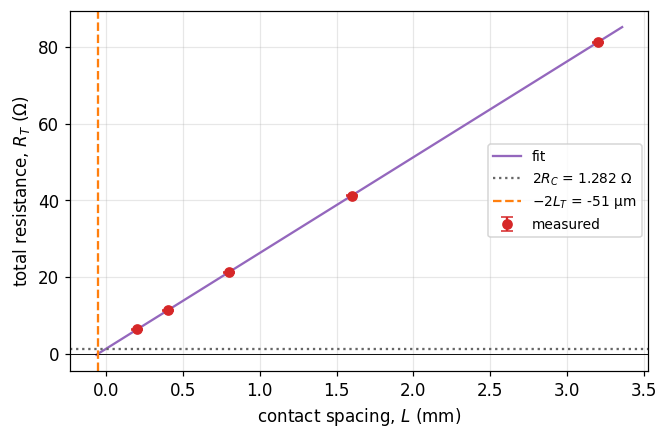
Look at the two ratios printed above. The sheet resistance comes back within a fraction of a percent of the value used to generate the data; \(\rho_C\) is out by around ten percent — from the same fit, on the same data. That asymmetry is not an accident, and it is the central practical fact about TLM.
10. Which errors matter¶
\(R_S\) comes from the slope, which is constrained by every point across the whole range of spacings. \(\rho_C\) comes from the intercept, an extrapolation beyond the smallest spacing measured, and then gets squared:
A 10% error on the intercept is a 20% error on \(\rho_C\). Anything that adds a constant offset to every measured \(R_T\) — two-wire probing, a contact resistance in the probe tips, a systematic spacing error — lands entirely in \(b\) and is invisible in the quality of the fit.
Because \(\rho_C\) depends on the square of a fitted ratio, its error distribution is skewed rather than Gaussian, so a Monte-Carlo over the measured scatter is more honest than a \(\pm\) number.
mc = th.monte_carlo_uncertainty(L, R_mean, R_std, W_mm=data['W_mm'],
n_trials=4000, seed=3)
fig, (a1, a2) = plt.subplots(1, 2, figsize=(10.5, 3.4))
a1.hist(mc['Rs_ohm_sq'], bins=50, color='C0')
a1.axvline(truth['Rs_ohm_sq'], color='k', ls='--', label='true')
a1.set_xlabel('$R_S$ (Ω/sq)'); a1.set_ylabel('trials'); a1.legend(fontsize=9)
a2.hist(mc['rho_c_ohm_cm2'] * 1e3, bins=50, color='C1')
a2.axvline(truth['rho_c_ohm_cm2'] * 1e3, color='k', ls='--', label='true')
a2.set_xlabel('$\\rho_C$ (mΩ cm²)'); a2.legend(fontsize=9)
plt.tight_layout(); plt.show()
for key, unit, scale in [('Rs_ohm_sq', 'Ω/sq', 1), ('rho_c_ohm_cm2', 'mΩ cm²', 1e3)]:
v = mc[key] * scale
lo, hi = np.percentile(v, [16, 84])
print(f"{key:15s} median {np.median(v):8.4g} {unit:8s} "
f"68% interval [{lo:.4g}, {hi:.4g}] "
f"(±{100*(hi-lo)/2/np.median(v):.1f}%)")
Rs_ohm_sq median 249.7 Ω/sq 68% interval [249.1, 250.3] (±0.2%)
rho_c_ohm_cm2 median 1.692 mΩ cm² 68% interval [1.459, 1.942] (±14.3%)
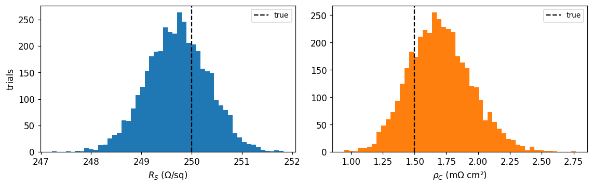
A second, more insidious error is a systematic offset on \(R_T\): every point shifted by the same amount. The fit stays perfectly straight, \(R^2\) stays at 1, and only \(\rho_C\) moves. The cell below adds a 0.2 Ω probe resistance — the kind of thing two-wire probing gives you for free — and refits.
offsets = [0.0, 0.1, 0.2, 0.5]
print(f"{'offset (Ω)':>11} {'R_S (Ω/sq)':>11} {'rho_C (mΩcm²)':>14} {'R²':>8}")
for off in offsets:
r = th.fit_tlm(L, R_mean + off, W_mm=data['W_mm'], sigma_ohm=R_std)
print(f"{off:11.2f} {r.Rs_ohm_sq:11.1f} "
f"{r.rho_c_ohm_cm2*1e3:14.3f} {r.r_squared:8.5f}")
print(f"\ntrue rho_C = {truth['rho_c_ohm_cm2']*1e3:.3f} mΩcm²")
print("R_S is untouched; rho_C is not, and the fit quality never warns you.")
offset (Ω) R_S (Ω/sq) rho_C (mΩcm²) R²
0.00 249.8 1.645 1.00000
0.10 249.8 1.911 1.00000
0.20 249.8 2.198 1.00000
0.50 249.8 3.178 1.00000
true rho_C = 1.500 mΩcm²
R_S is untouched; rho_C is not, and the fit quality never warns you.
11. When TLM breaks down¶
The extraction assumes:
- the sheet resistance is uniform, and the same under the contacts as between them;
- all contacts are identical;
- metal and lead resistance are negligible;
- current flow is one-dimensional along the strip (contacts span the full width of an isolated mesa);
- the contacts are ohmic, so \(R_T\) is well defined;
- \(R_T\) vs \(L\) is linear over the measured range.
Two failures dominate in practice.
The transfer length is not small compared with the spacings. The intercept is an extrapolation from the smallest \(L\) measured down to zero. If \(L_T\) is a large fraction of \(L_{\max}\), that extrapolation — and hence \(\rho_C\) — is barely constrained by the data. A working rule: the largest spacing should be several times \(L_T\), and the smallest spacing should be as small as the process allows.
The contacts are not ohmic. A rectifying interface gives an S-shaped I-V, and the "resistance" you extract then depends on the voltage window you happened to sweep. Fitting a line to it produces a number, no warning, and a meaningless \(\rho_C\).
tlm_helper.tlm_validity_report checks the first family of problems
mechanically; the second needs looking at the I-V curves.
# --- failure mode 1: spacings too small to pin down a long L_T ---
bad = th.synthetic_tlm_dataset(
np.array([0.10, 0.15, 0.20, 0.25, 0.30]), # all spacings tiny
Rs_ohm_sq=250.0, rho_c_ohm_cm2=5e-2, # and a poor contact
W_mm=10.0, n_repeats=4, noise_pA=400.0, spacing_error_um=8.0, seed=11)
L_b, R_b, S_b, _ = th.resistances_per_spacing(bad)
res_b = th.fit_tlm(L_b, R_b, W_mm=bad['W_mm'], sigma_ohm=S_b)
print(res_b.summary())
print(f"\ntrue L_T = {bad['truth']['LT_mm']:.3f} mm, "
f"largest spacing = {L_b.max():.2f} mm")
print("\nvalidity report:")
for w in th.tlm_validity_report(res_b):
print(" ! " + w)
TLM extraction
--------------
fit R_T = 25.2 * L + 7.074 (R^2 = 0.99976)
contact width W = 10 mm
sheet resist. R_S = 252 +/- 1.6 ohm/sq
contact res. R_C = 3.537 +/- 0.016 ohm
transfer len. L_T = 0.1404 +/- 0.0015 mm
contact resy. rho_C = 0.04966 +/- 0.0011 ohm.cm^2
true L_T = 0.141 mm, largest spacing = 0.30 mm
validity report:
! L_T = 0.14 mm is 47% of the largest spacing (0.3 mm). The intercept is then mostly extrapolation; rho_C from this fit is unreliable. Measure larger spacings, so that L_max is several times L_T.
! Spacings span only a factor 3.0. A short lever arm makes the extrapolated intercept noisy.
# --- failure mode 2: a rectifying contact ---
V = np.linspace(-0.3, 0.3, 301)
I_ohmic = th.iv_curve(V, 250.0, 1.0, 10.0, LT_mm=0.02)
I_schottky = th.iv_curve_schottky(V, R_ohm=25.0, I_sat=2e-3, n=2.0)
plt.figure(figsize=(5.6, 3.8))
plt.plot(V, I_ohmic * 1e3, label='ohmic contact')
plt.plot(V, I_schottky * 1e3, label='rectifying contact')
plt.xlabel('Voltage (V)'); plt.ylabel('Current (mA)')
plt.legend(fontsize=9); plt.grid(alpha=0.3)
plt.tight_layout(); plt.show()
print(f"{'fit window (V)':>15} {'R from ohmic':>13} {'R from rectifying':>18}")
for vw in [(-0.05, 0.05), (-0.15, 0.15), (-0.3, 0.3)]:
r_o = th.resistance_from_iv(V, I_ohmic, V_window=vw)
r_s = th.resistance_from_iv(V, I_schottky, V_window=vw)
print(f" ±{abs(vw[0]):.2f} {r_o:13.2f} {r_s:18.2f}")
print("\nThe ohmic device gives the same resistance whatever window you fit.")
print("The rectifying one does not - and there is no single right answer.")
fit window (V) R from ohmic R from rectifying
±0.05 26.00 42.82
±0.15 26.00 28.51
±0.30 26.00 25.39
The ohmic device gives the same resistance whatever window you fit.
The rectifying one does not - and there is no single right answer.
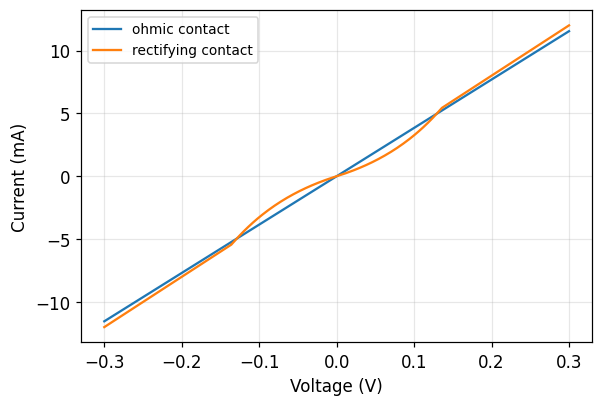
12. Running this on your own data¶
tlm_helper.load_tlm_folder reads a directory of measured I-V files into
exactly the structure synthetic_tlm_dataset produces, so everything above
works unchanged on real measurements:
data = th.load_tlm_folder('./my_measurements', W_mm=10.0)
res, L, R_mean, R_std, warnings = th.analyse_tlm(data)
print(res.summary())
for w in warnings:
print('!', w)
It expects one CSV per contact spacing, with the spacing in the file name
(sample1_2.5mm.csv → 2.5 mm), and one or more voltage/current column
pairs per file — one pair per repeated structure at that spacing. Exporters
that write a third column between sweeps are handled with
columns_per_sweep=3.
Before trusting any number that comes out:
- check every I-V curve is straight (
th.iv_linearity, section 11); - confirm the measurement was four-wire, or subtract the probe resistance;
- measure \(W\) rather than taking it from the mask;
- read the validity report, and compare \(L_T\) with your smallest spacing.
The cell below runs the whole chain end to end on the synthetic dataset, which is the same three lines you would run on your own folder.
res_final, L_f, R_f, S_f, warnings = th.analyse_tlm(data)
print(res_final.summary())
print("\nvalidity report:", "nothing flagged" if not warnings else "")
for w in warnings:
print(" ! " + w)
TLM extraction
--------------
fit R_T = 24.98 * L + 1.282 (R^2 = 1.00000)
contact width W = 10 mm
sheet resist. R_S = 249.8 +/- 0.18 ohm/sq
contact res. R_C = 0.6409 +/- 0.013 ohm
transfer len. L_T = 0.02566 +/- 0.00053 mm
contact resy. rho_C = 0.001645 +/- 6.8e-05 ohm.cm^2
validity report: nothing flagged
Summary of equations¶
| # | Equation | Meaning |
|---|---|---|
| (1) | \(R_T = 2R_m + 2R_C + R_{\text{semi}}\) | what a two-probe measurement contains |
| (2) | \(R_S = \rho/t\) | sheet resistance of a thin layer |
| (3) | \(R_{\text{semi}} = R_S L/W\) | resistance of \(L/W\) squares |
| (4) | \(R_T = R_S L/W + 2R_C\) | linear TLM relation |
| (5) | \(\rho_C = R_C A_{\text{eff}}\) | definition of specific contact resistivity |
| (6) | \(I(x) = I_0 e^{-x/L_T}\) | current decay under the contact |
| (7) | \(L_T = \sqrt{\rho_C/R_S}\) | transfer length |
| (8) | \(A_{\text{eff}} = L_T W\) | effective current-transfer area |
| (9) | \(R_C = \rho_C/(L_T W) = R_S L_T/W\) | resistance of one contact |
| (10) | \(R_T = (R_S/W)(L + 2L_T)\) | the TLM equation |
| (11) | \(I = V/R_T + I_{\text{offset}}\) | reducing one sweep to one resistance |
| (12) | \(R_S = mW\) | sheet resistance from the slope |
| (13) | \(R_C = b/2\) | contact resistance from the intercept |
| (14) | \(L_T = b/(2m)\) | transfer length from both |
| (15) | \(\rho_C = R_S L_T^2\) | the number to report |
| (16) | \(\Delta\rho_C/\rho_C \approx 2\,\Delta b/b\) | why the intercept dominates the error |
Symbols: \(L\) contact spacing, \(W\) contact width, \(d\) contact length, \(m\) fitted slope, \(b\) fitted intercept.